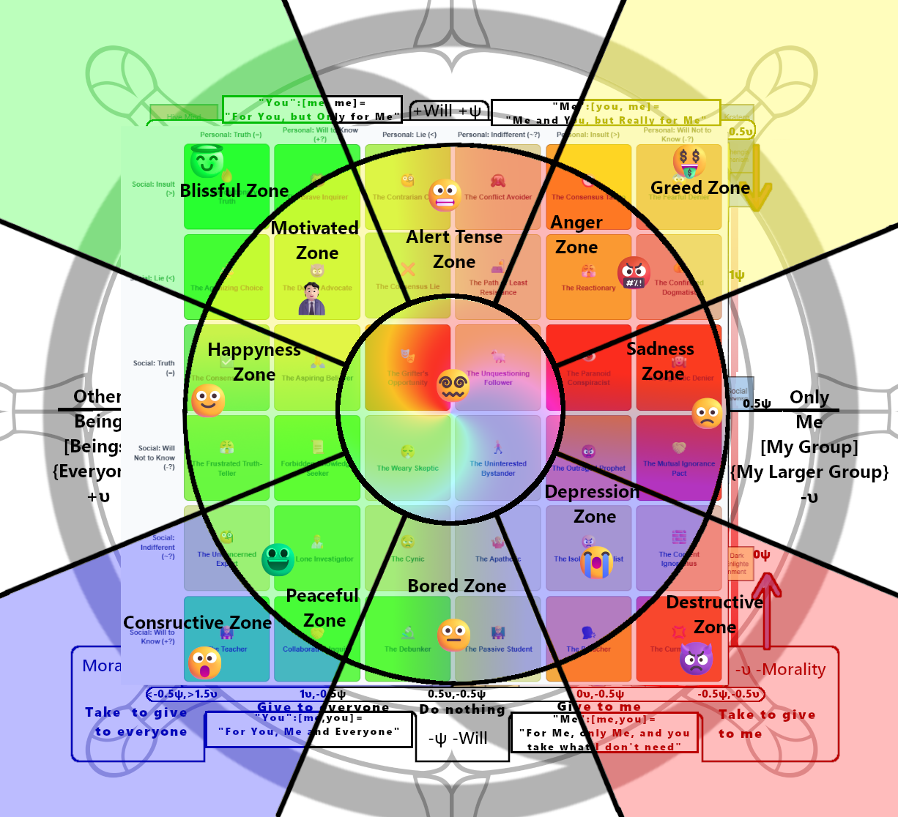

How to Read the Matrix (Click to Expand)
ELI5 (Explain Like I'm 5)
Imagine your mind is a boat and every new idea is a stranger. This grid is a map of your feelings about that stranger. It checks: 1) Do YOU like them? and 2) What do you THINK everyone else feels? The "Context Switcher" tells you who the stranger *really* is: a helpful guide (Good Truth), a monster (Bad Truth), or a liar (Bad Lie). Trusting them can be brave or foolish depending on who they truly are.
ELI18 (Explain Like I'm 18)
This matrix models the cognitive dissonance between your personal judgment of an idea and your perception of social consensus. Each of the 36 states is a psychological archetype—like "The Heretic" or "The Grifter"—born from this internal vs. external tension. The "Context Switcher" adds objective reality, showing how the morality of being "The Heretic" changes if you're fighting a "Good Truth" (making you a denier) versus a "Bad Lie" (making you a voice of reason).
Expert Explanation
This 6x6 matrix is a comprehensive topological map of cognitive-social states derived from Vector Field Theory. It plots an agent's internal disposition toward a proposition (Personal Axis) against their perception of the collective disposition (Social Axis). The axes are discretized into six states: three pre-judgmental states of inquiry (+?, ~?, -?) representing vectors of will toward knowledge, and three post-judgmental states (=, <, >) representing a settled conviction. The "Context Switcher" introduces the objective frame (the Kanon), allowing for a true hegemonic analysis. It recalibrates the Hegemonic Vector (υ, ψ) of all 36 subjective states, quantifying their moral constructiveness/destructiveness based on their alignment with an objective ground truth, thus moving the analysis from mere psychology to applied ethics.
Scientific Explanation
The model provides a testable framework for social psychology and memetics. It treats belief as an emergent phenomenon from the interaction of an individual's internal heuristic analysis (Personal Axis) and their simulation of the group's heuristic (Social Axis). The "Context Switcher" acts as the control variable, setting the objective properties of the memetic payload (the idea). By observing the resulting shift in the Hegemonic Vectors (υ, ψ) across the 36 states, we can predict and quantify the pro-social (constructive) or anti-social (destructive) potential of any given subjective reaction to an objective reality. This allows for modeling the spread of information and misinformation through a population with varying psychological predispositions.
Spiritual Explanation
This matrix is a map of the soul's journey toward or away from Unconcealed Truth (Aletheia). The Personal Axis is the state of one's inner Will, while the Social Axis is the world of illusion and collective opinion (Maya). The "Context Switcher" represents the voice of the Absolute or the divine ground of being—the objective truth that exists independent of our perceptions. A soul's journey is a success (a move toward +υ) when their inner Will aligns with this objective truth, piercing the veil of Maya. When the Will aligns with Maya against objective truth, the soul moves toward the Greed Zone and the Greater Lie (-υ), trapping itself in delusion.
Mythological Explanation
This matrix is a map of the underworld of the mind, where every new idea is Charon, the Ferryman, demanding judgment to cross the River Styx. The 36 states are the possible voyages. The "Context Switcher" is the final destination that the Ferryman is *actually* taking you to. Choosing to believe the Ferryman might seem wise if his destination is the Elysian Fields (a Good Truth), but it is folly if his true destination is Tartarus (a Bad Lie). The heroism or foolishness of your personal judgment is only revealed when measured against the objective reality of the final shore.
The Context Switcher: Applying the Kanon
This is the most critical part of the instrument. The grid shows the 36 ways you and society can *subjectively feel* about an idea. The Context Switcher sets what that idea *objectively is*. By changing the context, you change the moral landscape, revealing that no belief state is inherently good or evil; its vector is determined by its relationship to objective reality.
- Natural State: The baseline reality, revealing our dispositions when the idea's nature is unknown.
- Good Truth: A beneficial, objective truth. Aligning with it is constructive.
- Bad Truth: A harmful, objective truth. Resisting it can be constructive.
- Good Lie: A beneficial falsehood. It creates a paradox where embracing a lie can be constructive.
- Bad Lie: A harmful falsehood. Resisting it is constructive.
- Good Preference: A harmless subjective taste. Judging it is a category error.
- Bad Preference: A harmful subjective taste. Its negative impact makes it objectively destructive.
Select The Objective Reality Frame (The 3rd Axis)
Current Objective Frame: Natural State
Imagine a wide, fog-shrouded river, grey and endless. This is the River of Six, the modern Styx, where every new idea is a silent Ferryman demanding passage. On its waters drifts a single, ancient boat, carrying 7 levels of 36 passengers—each a version of you, each a State of Belief.
The boat is your mind. The Ferryman is every new idea. And the journey across the River of Six never ends; one passenger simply takes the oar from another, and the course is changed.
Hegemonic Map of States
An interactive scatter plot visualizing the moral and willful alignment of the 36 States of Belief. Click on a point to see its details.
